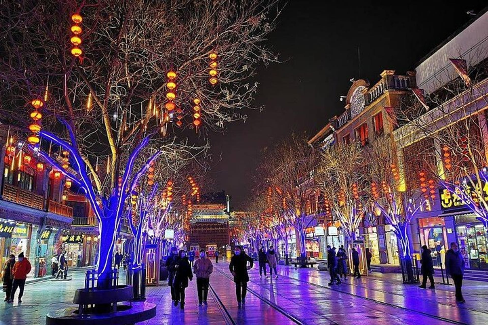

Winter Night — 冬夜的胡同
The hutong narrows into quiet shadow. Frost gathers on window grilles. A red lantern hums against the wind, casting a circle of trembling light. Smoke from a coal stove curls upward, slow and steady — a sign of life continuing through the cold.